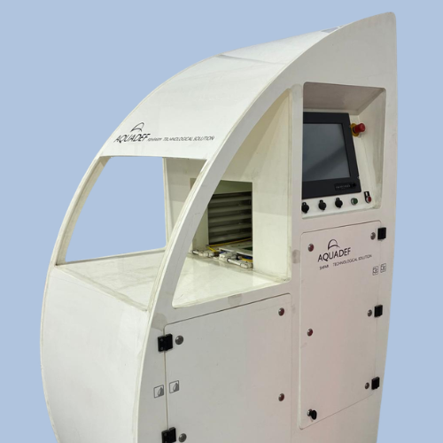

Aquadef® is the first automatic system to detect and separate deformed fry in real time. It counts, measures and segregates batches by size simultaneously — eliminating human error at the most critical stage of aquaculture production.

The system simultaneously analyses four key anatomical zones of each fry, detecting the most frequent and clinically relevant malformations in aquaculture production.
Detects exposed gill using colour coordinates, identifying fry with anomalous opercula that are vulnerable to infection and respiratory stress.
Detects incorrect mouth angle via silhouette analysis, identifying malformations that impair efficient feeding and reduce fry survival rates.
Detects angular changes in the fish silhouette to identify spinal deviations (scoliosis, lordosis, kyphosis) affecting development and feed conversion.
Detects angular changes in the dorsal silhouette zone, identifying fin malformations that are early indicators of structural problems in the fry.
Detects and physically separates deformed fry in real time, with no manual intervention. Continuous process matched to production rate.
Counts fry with high precision during the process, providing accurate batch population data for inventory management and cultivation planning.
Measures individual size and calculates average batch weight, generating biometric profiles that enable feed and growth optimisation.
Segregates batches by size into separate channels simultaneously, reducing intraspecific competition and improving culture homogeneity and survival.
Generates detailed batch reports with biometric and morphological data, malformation percentages by type and standardised production statistics.
Internet connectivity for real-time international technical assistance. Low maintenance with remote software updates.
Removing unsuitable fry early avoids the cost of feeding, treating and maintaining them in tanks until the problem becomes visible to the naked eye.
Lower density of non-productive animals reduces costs of water volume, feed and treatments, and shortens transition times between cultivation phases.
Homogeneous, deformity-free batches show higher survival, better feed conversion and greater commercial value in subsequent production cycle stages.
Acceptance criteria are defined by the client and applied objectively and reproducibly, eliminating variability from human judgement in fry selection.
Contact the Marexi team for a demonstration, detailed specifications or a proposal tailored to your facility.
Contact Marexi